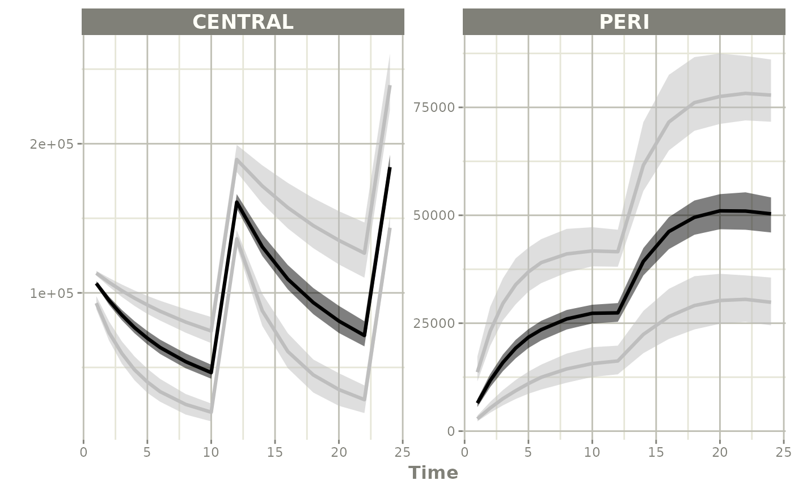

Simulate using Parameter Uncertainty
Source:vignettes/articles/simulate-uncertainty.Rmd
simulate-uncertainty.RmdThis page shows a simple work-flow for directly simulating a different dosing paradigm than what was modeled taking into account the modeled uncertainty. This workflow is very similar to simply simulating without uncertainty in the parameters themselves.
Step 1: Import the model
library(nonmem2rx)
library(rxode2)
# its best practice to set the seed for the simulations
set.seed(42)
rxSetSeed(42)
# First we need the location of the nonmem control stream Since we are
# running an example, we will use one of the built-in examples in
# `nonmem2rx`
ctlFile <- system.file("mods/cpt/runODE032.ctl", package="nonmem2rx")
# You can use a control stream or other file. With the development
# version of `babelmixr2`, you can simply point to the listing file
mod <- nonmem2rx(ctlFile, lst=".res", save=FALSE, determineError=FALSE)
#> ℹ getting information from '/home/runner/work/_temp/Library/nonmem2rx/mods/cpt/runODE032.ctl'
#> ℹ reading in xml file
#> ℹ done
#> ℹ reading in ext file
#> ℹ done
#> ℹ reading in phi file
#> ℹ done
#> ℹ reading in lst file
#> ℹ abbreviated list parsing
#> ℹ done
#> ℹ done
#> ℹ splitting control stream by records
#> ℹ done
#> ℹ Processing record $INPUT
#> ℹ Processing record $MODEL
#> ℹ Processing record $gTHETA
#> ℹ Processing record $OMEGA
#> ℹ Processing record $SIGMA
#> ℹ Processing record $PROBLEM
#> ℹ Processing record $DATA
#> ℹ Processing record $SUBROUTINES
#> ℹ Processing record $PK
#> ℹ Processing record $DES
#> ℹ Processing record $ERROR
#> ℹ Processing record $ESTIMATION
#> ℹ Ignore record $ESTIMATION
#> ℹ Processing record $COVARIANCE
#> ℹ Ignore record $COVARIANCE
#> ℹ Processing record $TABLE
#> ℹ change initial estimate of `theta1` to `1.37034036528946`
#> ℹ change initial estimate of `theta2` to `4.19814911033061`
#> ℹ change initial estimate of `theta3` to `1.38003493562413`
#> ℹ change initial estimate of `theta4` to `3.87657341967489`
#> ℹ change initial estimate of `theta5` to `0.196446108190896`
#> ℹ change initial estimate of `eta1` to `0.101251418415006`
#> ℹ change initial estimate of `eta2` to `0.0993872449483344`
#> ℹ change initial estimate of `eta3` to `0.101302674763154`
#> ℹ change initial estimate of `eta4` to `0.0730497519364148`
#> ℹ read in nonmem input data (for model validation): /home/runner/work/_temp/Library/nonmem2rx/mods/cpt/Bolus_2CPT.csv
#> ℹ ignoring lines that begin with a letter (IGNORE=@)'
#> ℹ applying names specified by $INPUT
#> ℹ subsetting accept/ignore filters code: .data[-which((.data$SD == 0)),]
#> ℹ done
#> ℹ read in nonmem IPRED data (for model validation): /home/runner/work/_temp/Library/nonmem2rx/mods/cpt/runODE032.csv
#> ℹ done
#> ℹ changing most variables to lower case
#> ℹ done
#> ℹ replace theta names
#> ℹ done
#> ℹ replace eta names
#> ℹ done (no labels)
#> ℹ renaming compartments
#> ℹ done
#> ℹ solving ipred problem
#> ℹ done
#> ℹ solving pred problem
#> ℹ doneStep 2: Look at a different dosing paradigm
Lets say that in this case instead of a single dose, we want to see what the concentration profile is with a single day of BID dosing. In this case is done by creating a quick event table.
Step 3: Solve using the uncertainty in the NONMEM model
To use the uncertainty in the model, it is a simple matter of telling
how many times rxode2() should sample with
nStud=X. In this case we will use 100.
s <- rxSolve(mod, ev, nStud=100)
#> ℹ using nocb interpolation like NONMEM, specify directly to change
#> ℹ using addlKeepsCov=TRUE like NONMEM, specify directly to change
#> ℹ using addlDropSs=TRUE like NONMEM, specify directly to change
#> ℹ using ssAtDoseTime=TRUE like NONMEM, specify directly to change
#> ℹ using safeZero=FALSE since NONMEM does not use protection by default
#> ℹ using safePow=FALSE since NONMEM does not use protection by default
#> ℹ using safeLog=FALSE since NONMEM does not use protection by default
#> ℹ using ss2cancelAllPending=FALSE since NONMEM does not cancel pending doses with SS=2
#> ℹ using dfSub=120 from NONMEM
#> ℹ using dfObs=2280 from NONMEM
#> ℹ using thetaMat from NONMEM
#> ℹ using sigma from NONMEM
#> ℹ using NONMEM specified atol=1e-12
#> ℹ using NONMEM specified rtol=1e-06
#> ℹ using NONMEM specified ssAtol=1e-12
#> ℹ thetaMat has too many items, ignored: 'omega.2.1', 'omega.3.1', 'omega.3.2', 'omega.4.1', 'omega.4.2', 'omega.4.3'
#> ℹ thetaMat has zero diagonal items, ignored: 'eps1'
#> [====|====|====|====|====|====|====|====|====|====] 0:00:01
s
#> ── Solved rxode2 object ──
#> ── Parameters (x$params): ──
#> # A tibble: 10,000 × 11
#> sim.id id theta1 theta2 theta3 theta4 RSV eta1 eta2 eta3
#> <int> <fct> <dbl> <dbl> <dbl> <dbl> <dbl> <dbl> <dbl> <dbl>
#> 1 1 1 1.34 4.14 1.34 3.88 0.197 -0.177 -0.0490 0.354
#> 2 1 2 1.34 4.14 1.34 3.88 0.197 0.300 -0.175 -0.000835
#> 3 1 3 1.34 4.14 1.34 3.88 0.197 0.512 0.543 0.0679
#> 4 1 4 1.34 4.14 1.34 3.88 0.197 -0.0557 -0.225 0.464
#> 5 1 5 1.34 4.14 1.34 3.88 0.197 0.0727 0.717 -0.0169
#> 6 1 6 1.34 4.14 1.34 3.88 0.197 -0.0835 -0.221 0.510
#> 7 1 7 1.34 4.14 1.34 3.88 0.197 0.721 -0.147 0.306
#> 8 1 8 1.34 4.14 1.34 3.88 0.197 0.336 0.00156 0.287
#> 9 1 9 1.34 4.14 1.34 3.88 0.197 0.240 -0.00161 -0.246
#> 10 1 10 1.34 4.14 1.34 3.88 0.197 0.368 -0.178 0.171
#> # ℹ 9,990 more rows
#> # ℹ 1 more variable: eta4 <dbl>
#> ── Initial Conditions (x$inits): ──
#> CENTRAL PERI
#> 0 0
#>
#> Simulation with uncertainty in:
#> • parameters (x$thetaMat for changes)
#> • omega matrix (x$omegaList)
#> • sigma matrix (x$sigmaList)
#>
#> ── First part of data (object): ──
#> # A tibble: 150,000 × 21
#> sim.id id time cl v q v2 v1 scale1 k21 k12 f
#> <int> <int> <dbl> <dbl> <dbl> <dbl> <dbl> <dbl> <dbl> <dbl> <dbl> <dbl>
#> 1 1 1 1 3.21 59.9 5.41 31.1 59.9 59.9 0.174 0.0904 1749.
#> 2 1 1 2 3.21 59.9 5.41 31.1 59.9 59.9 0.174 0.0904 1549.
#> 3 1 1 3 3.21 59.9 5.41 31.1 59.9 59.9 0.174 0.0904 1391.
#> 4 1 1 4 3.21 59.9 5.41 31.1 59.9 59.9 0.174 0.0904 1265.
#> 5 1 1 5 3.21 59.9 5.41 31.1 59.9 59.9 0.174 0.0904 1164.
#> 6 1 1 6 3.21 59.9 5.41 31.1 59.9 59.9 0.174 0.0904 1081.
#> # ℹ 149,994 more rows
#> # ℹ 9 more variables: ipred <dbl>, rescv <dbl>, w <dbl>, ires <dbl>,
#> # iwres <dbl>, y <dbl>, CENTRAL <dbl>, PERI <dbl>, DV <dbl>Step 4: Summarize and plot
Since there is a bunch of data, a confidence band of the simulation with uncertainty would be helpful.
One way to do that is to select the interesting components, create a confidence interval and then plot the confidence bands:
sci <- confint(s, parm=c("CENTRAL", "PERI", "sim"))
#> summarizing data...done
sci
#> # A tibble: 90 × 7
#> p1 time trt p2.5 p50 p97.5 Percentile
#> <dbl> <dbl> <fct> <dbl> <dbl> <dbl> <fct>
#> 1 0.0250 1 CENTRAL 89088. 93122. 97785. 2.5%
#> 2 0.5 1 CENTRAL 104763. 106382. 107850. 50%
#> 3 0.975 1 CENTRAL 111628. 113213. 114778. 97.5%
#> 4 0.0250 2 CENTRAL 67932. 73356. 80896. 2.5%
#> 5 0.5 2 CENTRAL 91994. 94928. 97428. 50%
#> 6 0.975 2 CENTRAL 104126. 107042. 109995. 97.5%
#> 7 0.0250 3 CENTRAL 52547. 59414. 67509. 2.5%
#> 8 0.5 3 CENTRAL 81661. 85156. 88600. 50%
#> 9 0.975 3 CENTRAL 97288. 101479. 105605. 97.5%
#> 10 0.0250 4 CENTRAL 41353. 48409. 57328. 2.5%
#> # ℹ 80 more rows
plot(sci)
plot(sci, log="y")